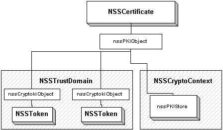

'default',
);
require_once "{$config['file_root']}/includes/header.inc.php"
?>
Guide to working in Stan code
The diagram below shows the overall structure of the core NSS library (libnss4.so).
Note that libdev is the only module that depends on Cryptoki. No other
module should use Cryptoki types/functions.
Here are some important topics:
Style
- Header files
- Public functions go in nss<module>.h, where <module>
is one of base,
asn1,
dev,
pki,
and pkix.
Public functions are always of the form NSSObject_DoSomething(...).
- The implementation of a public function checks the supplied arguments
for validity, clears the error stack, and calls the corresponding private
function.
- we should discuss whether we want to abandon the so-called "Principle
of Least Suprise", which stipulates that the full, unabbreviated names of
things should always be used. This leads to long function names, like
NSSTrustDomain_FindTokenForAlgNParam.
- Private functions (NSS-only) go in <module>.h. Private
functions are always of the form nssObject_DoSomething(...). There
is a private function for every public function, as shown above.
- Friendly functions (exported from shared library, but not considered
public) go in nss<module>f.h, and are of the form nssObject_DoSomething(...).
- Module-private functions (private to the module) go in <module>m.h,
and are of the form nssObject_DoSomething.
- All other functions should be static. Since they are static,
they can be of the form do_something(...).
- Type definitions follow the same rules, with the header files being
of the from xxxt.h. In general, types should be defined in the file
that implements them, for example, NSSCertStr is defined in certificate.c.
- The only memory-management functions that should be used are those
defined in the next section.
- NSSUTF8 is the string implementation, and has an API that should be
used in lieu of string.h or NSPR.
- In general, the style is like this (note two spaces are used in structure
and function definitions, and the usual 4-space/tab elsewhere, I picked this
up from the existing code and kept it):
[nssmodule.h]
NSS_EXTERN ReturnValue
NSSObject1_DoSomething (
NSSObject2 *arg1,
NSSObject3 *arg2
);
[nssmodulet.h]
typedef struct NSSObject1Str NSSObject1;
[module.h]
NSS_EXTERN ReturnValue
nssObject1_DoSomething (
NSSObject2 *arg1,
NSSObject3 *arg2
);
[object1.c]
struct NSSObject1Str
{
NSSArena *arena;
NSSObject2 *member1;
};
NSS_IMPLEMENT ReturnValue
nssObject1_DoSomething (
NSSObject2 *arg1,
NSSObject3 *arg2
)
{
/* code to implement the function */
...
return rv;
}
NSS_IMPLEMENT ReturnType
NSSObject_DoSomething (
NSSObject1 *arg1,
NSSObject2 *arg2
)
{
PR_ASSERT(arg1);
PR_ASSERT(arg2);
/* any other argument validity checking */
nss_ClearErrorStack();
return nssObject_DoSomething(arg1, arg2);
}
Memory
- All of the memory routines are contained in libbase. The type
NSSArena wraps NSPR's arena pools in a threasafe manner. See base.h.
- The single point of entry for allocating memory buffers is nss_ZAlloc.
This function is wrapped by nss_ZNEW for allocating structures and
nss_ZNEWARRAY for allocating arrays. A buffer can be grown/shrunk by
nss_ZRealloc. All four functions take an optional arena argument. If
an arena is supplied, it will be used; otherwise, memory comes from the heap.
- The single point of entry for freeing memory buffers is nss_ZFreeIf.
This function can be called even for buffers allocated from an arena,
in that case it will simply zero the buffer.
- NSSArena's can be created, destroyed (always zeroed), marked, unmarked,
and released; just like NSPR.
- Pointer tracking is no longer implemented.
Errors
- Error codes are set in nsserrors.h
(a public header, obviously). They are macros, the type NSSError is
an integer.
- Errors are stacked, stacks are unique to a thread.
- Top-level errors are set by nss_SetError and retrieved by NSS_GetError.
NSS_GetErrorStack returns the entire stack. nss_ClearErrorStack
zeroes the stack. See base.h.
- A sort of "mark-and-release" mechanism is implemented. The function
nss_HoldErrorStack will cause calls to nss_ClearErrorStack to be
ignored. This is most useful when making API-level calls within NSS.
For example, libssl.so needs to call functions exported by nss.def. But
the exported functions are API functions (capital NSS), and they will
clear the error stack upon entry. The function nss_HoldErrorStack
instructs NSS not to clear the stack, but hold what it has. This hold
remains in effect until a call to nss_ResumeErrorStack, at which point
normal operation resumes. The function nss_ReleaseErrorStack will
release all errors added to the stack after a call to nss_HoldErrorStack,
and will resume normal operation as well.
Example:
SSL_DoSomething()
{
nss_ClearErrorStack(); /* clear any pre-existing errors */
nss_HoldErrorStack(); /* block any further calls to clear the stack */
... /* ssl code */
if (something_failed) {
nss_SetError(error1);
NSS_DestroySomething(); /* call into libnss */
}
nss_ResumeErrorStack(); /* remove the block on the error stack */
}
NSS_DestroySomething()
{
nss_ClearErrorStack(); /* this will have no effect */
... /* code */
if (something_failed) {
nss_SetError(error2);
}
}
In this simplified example, an SSL API function clears the error stack
upon entry, and then puts a hold on the stack, so that all errors incurred
during the function's execution will be stacked. This proves neccessary
when the SSL code experiences a failure, and calls an API-level Destroy()
function from the NSS API. The end result of the above example is that
the stack would contain two errors, { error1, error2 }.
Initialization
- The set of loaded modules available to all trust domains is maintained
in nssGlobalModuleList
(see dev.h
and modulelist.c).
Tokens/slots are extracted from this list individually for trust domains.
- At initialization time, the initial set of modules is loaded.
- In NSS 3.X, this is done by loading a special module from a
configuration directory supplied by the caller. A string of
options supplied to the module informs it how to load the
modules. A special function returns similar option strings for
any submodules the parent module contains, and they are loaded
recursively. In this way, secmod.db is treated like a
PKCS#11 module.
I wonder if we could get rid of secmod.db altogether, and
have applications provide the NSS initialization routines with a
complete configuration string for all modules they wish to load.
I believe the idea of booting NSS from a config file was mentioned
before...
- After initialization, trust domains load tokens from the global
module list.
- There is currently no API for this. Do we want to supply
a default trust domain that always uses all active tokens? That
would simplify products not interested in multiple trust domains.
ASN.1
- Stan currently employs the old ASN.1 encoder and decoder. It
is wrapped in a Stan-like API. See asn1.hand
asn1t.h.
- Is it time to change this? Specifically, should we be incorporating
Julien's quick decoder into the main line? What other improvements
could we make by allowing extensive modifications to the old code?
- I was suprised to learn that the current ASN.1 decoder can only
decode into SECItems. When fields are boolean, we would always
use a SECItem and have the result be allocated into a buffer the size
of a PRBool. This makes for annoying structures that contain
both a PRBool and a SECItem to represent the same value. I
propose always treating the BOOLEAN universal tag as a PRBool. I
also propose adding private tags for INT32 and UNSIGNED. Here's how
those tags would translate to fields during encoding/decoding:
- BOOLEAN - PRBool
- INTEGER | INT32 - PRInt32
- INTEGER | INT32 | UNSIGNED - PRUint32
- INTEGER | UNSIGNED - unsigned bignum (NSSItem)
- INTEGER - signed bignum (NSSItem)
- INT32 or UNSIGNED without INTEGER - error
The purpose of the UNSIGNED tag is to solve the problem we had with
unsigned and signed numbers. I believe Nelson proposed this method
back then, but I didn't realize that it was a superior method than the one
that was used (setting siUnsignedInteger in item->type).
- Instead of exporting ASN.1 templates as data from the shared library,
we will create a small library that contains commonly used templates. Other
libraries can include that library to access the templates.
OIDs
- Currently defined in oids.txt.
This file is run through a perl script that generates oiddata.h,
an exported header. Originally, this file declared a bunch of "extern
const NSSOID *"s. With shared libraries, this requires exporting data
objects on UNIX and creating gettor functions on Windows. Thus it has
been reverted to the NSS 3.X style of an enum of NSSOidTags.
- Static and dynamic OID hash tables remain, just as in NSS 3.X. OIDs
that are public (available through the NSSOIDTag enum) are registered in
oids.txt
by receiving a name.
Algorithms
-
In Stan, algorithms are represented by their corresponding OIDs. An
NSSAlgNParam object is the combination of an
OID and a set of parameters. This is translated to a CK_MECHANISM
for consumption by Cryptoki.
This is perhaps confusing in the case of keygen. For example, both
NSS_OID_DES_ECB and NSS_OID_DES_CBC will generate
a DES key when used with a keygen method. Also, since some keygen
algorithms require parameters, it is neccessary to create two
NSSAlgNParam in order to perform encryption,
one including the keygen parameters, and the second for the encryption
parameters. This should not come as a surprise, but a side effect is
that one could (in theory) create an NSSAlgNParam
for keygen using NSS_OID_DES_ECB, then use the same key in
combination with NSS_OID_DES_CBC to do encryption. Naive users
may be confused by the difference (or lack thereof).
-
Often the algorithm and parameters is very simple (MD5 hash, for
example). Having to always allocate this type for simple operations
will put undue stress on the allocator. We could:
- Make the type publicly visible, so that applications can create
it on the stack
- Have a set of default types that are exported as data
(1) goes against Stan philosophy of having abstract types. It
may not be a good idea because applications may try to cheat by
setting the fields directly. (2) does not work well with Windows DLLs.
Is this is an issue that should be addressed now, or wait to see
if it is a problem later?
PKCS#11 sessions
- The handle for a PKCS#11 session in NSS is nssSession. Note that
it is lowercase nss. This means it is a private NSS type. No
API functions should refer to it, and it is not visible to applications.
- The API for this type is nssSlot_CreateSession, nssToken_CreateSession
(these are identical, the second is a shorthand for the first), nssSession_Destroy,
nssSession_AddRef, nssSession_EnterMonitor, nssSession_ExitMonitor, and nssSession_IsReadWrite.
See dev.h.
- The code to handle "virtual" sessions is all contained within the implementation
of nssSession. This is the case where a token can no longer create
new sessions, so NSS must simulate new sessions by context switches (saving
the state of the current session and restoring a different state). See
the bottom of devslot.c.
- Additionally, sessions are reference counted. They can be shared
by two objects, and destroying one object will not close the session. The
thread-safety of the session is maintained by the monitor. Sessions
should not be shared when it is possible that users of the session will attempt
simultaneous multipart operations, either by using the session from different
threads, or by using the session for multiple operations within a thread.
This will incur a context switch, which is costly. But sessions
should be shared when this won't happen - for example, a session used to
generate a key should be reused to do encryptions with the key.
- The result of the last two points is that NSS code should be blind
to the semantics of PKCS#11 sessions. The type nssSession should be
used as though the token can produce an unlimited number, it should be created
and destroyed without concern for accidentally destroying session objects,
and it should be shared between objects via an AddRef when this makes sense
for performance reasons.
PKI Objects

The diagram to the right shows how objects are structured in Stan. Currently,
the two sources of objects are tokens and volatile domains. A certificate
is constructed by looking in the trust domain for all tokens containing the
cert. For each token, an nssCryptokiObject is created. This struct
contains the information needed to reference the token's cert instance.
A set of nssCryptokiObjects constitutes an nssPKIObject. Since the
functionality for managing instances of a PKI object is the same for all
types, this code is implemented in a common location, under the type
nssPKIObject. See pkim.h
and pkibase.c.
Think of it as being OO, and NSSCert, NSSPrivateKey, etc., all
inherit from nssPKIObject.
Here are the structure definitions for the object classes:
struct nssCryptokiObjectStr
{
CK_OBJECT_HANDLE handle;
NSSToken *token;
nssSession *session;
PRBool isTokenObject;
NSSUTF8 *label;
};
/* nssPKIObject
*
* This is the base object class, common to all PKI objects defined in
* nsspkit.h
*/
struct nssPKIObjectStr
{
/* The arena for all object memory */
NSSArena *arena;
/* Atomically incremented/decremented reference counting */
PRInt32 refCount;
/* lock protects the array of nssCryptokiInstance's of the object */
PZLock *lock;
/* XXX with LRU cache, this cannot be guaranteed up-to-date. It cannot
* be compared against the update level of the trust domain, since it is
* also affected by import/export. Where is this array needed?
*/
nssCryptokiObject **instances;
PRUint32 numInstances;
/* The object must live in a trust domain */
NSSTrustDomain *td;
/* The object may live in a volatile domain */
NSSVolatileDomain *vd;
/* XXX added so temp certs can have nickname, think more ... */
NSSUTF8 *tempName;
};
Cert Cache
Here is a link to the original
proposal for the Stan cert cache, with some history of how previous caches
worked in NSS 3.3- and NSS 3.4+.
As noted in that document, the Stan cert cache will consist of four
independent LRUs. The first will index a single certificate by its
issuer/serial combination. The remaining three will index an array of
certificates by their nickname, subject, or email address. Here is a brief
description of how the issuer/serial cache will work, that also fits with
the other caches in general.
The cache has N buckets. The operation of the cache is
broken up into the following steps:
- Cache entries always contain an "update level". This is a series
counter. Each time a token is added or removed within a trust domain,
the counter is incremented. When an entry is retrieved from the cache,
the update level is checked. If the entry's update level is less than
the current update level of the trust domain, the cache entry is considered
invalid and a new search is performed.
- For the issuer/serial cache, the "payload" is a single cert. For
the other three caches, it is an array of certs matching the index.
- Entries are added to the cache after a complete search over the index.
In this case, the trust domain has just been searched for a certificate
matching issuer/serial. The result, whether it is a valid NSSCert
or a NULL, is stored in the cache.
- When a cache hit is made, it is moved to the head of the list.
- When the cache is full, the entry at the tail of the list is dropped.
- When a certificate is removed from the trust domain (via a call to NSSCert_DeleteStoredObject),
all cache entries of the cert are explicitly removed.
- When a certificate is added to a trust domain, any related cache entries
are updated. For example, if there is already an entry for the cert's
subject, the cert is added to that entry (issuer/serial is not a good example
for this case, as no entry needs to be added).
Token state changes
NSS must handle devices with removable tokens. In the past, this has
created some problems, especially with the certificate cache. The above
section describes measures taken to keep token removal issues to a minimum
in the cache. Specifically, when a cache entry is out-of-date, it is
discarded, and a new search is performed. This greatly simplifies the
code, as it uses the same branch as a cache miss, so there doesn't have to
be any explicit cache updates when tokens are removed.
However, removable devices present difficulties when multiple instances of
a cert exist. It has been proposed (at the end of thisdoc) that certificate pointers
no longer be unique. This proposal was a result of using a fixed-size
cache. Once a cert drops out of the cache, it is no longer visible to
NSS, and a different thread could rediscover the cert, creating a new reference.
Suppose certA points to the cert whose issuer/serial pair is { "CN=Foo", 01
}. It is put in the LRU cache for issuer/serial after a search. After
some time it drops out of the cache in favor of more recently used certs.
However, thread A still has an oustanding reference to certA. Thread
B does a search for { "CN=foo", 01 }. It creates certB to hold the
result, and puts certB in the cache. Thread B then imports certB into
a new token (for example, the cert came from the softoken, and is being imported
into a smart card). Thread A and certA have no way of being aware of
this action, and certA will not recognize that it exists on the new token.
This is a tricky problem, and it appears the only reasonable solution is to
retain a table of all objects (the same series of events could occur with
a private key). This would be a table of nssPKIObjects, it would grow
to the size of all oustanding object references, and would be a bottleneck
for all object operations (searches, imports, and removals).
One observation is that the kind of operations described only really affect
clients. Servers are not likely to make the kind of state operations
that create the problem (specifically, moving objects between tokens). Is
it possible to profess that NSS cannot gracefully handle such state changes
in a multithreaded app (not likely, it would seem)? Is this case too
unlikely to be a problem? Is there a better solution? Or is an
object table not going to cause problems (performance or otherwise)?
Also, token state changes affect how an object can be used. If an object
is moved to/from a token that can perform a certain operation (say, encryption)
from/to one that cannot, that will affect API calls using that object for
that operation. There could be a simple lock for each object. This
lock would protect the set of instances of the object. The lock would be
invoked whenever the object interacts with its instances, for example, a
symmetric key iterating over its instances to find a token for encryptions.
The lock would effectively serialize all operations per object. Alternatively,
we could use a reader-writer lock instead of a simple lock. The write lock
would only be invoked when the object is added/removed from a token.
PKI-1
libpki1 currently
implements (or has APIs for) the following types:
- OID
- Attribute Type and Value
- Name
- Relative Distinguished Name, RDNSequence
- General Name, General Name Sequence
Logically, it would seem that this library should be part of the core NSS
library. Certainly, OIDs are used everywhere, and the API even makes
references to them.
However, the Name-related types do not seem so obvious for inclusion in the
core library. In NSS 3.X, the only code that uses these types is the
X.509 certificate code, so it would seem they should be implemented in the
PKIX library (libpkix).
The only apparent use of these types in the core NSS library are the API
functions related to certificate searches by Name components. It is
not clear how this would be implemented in PKCS#11, and if it were, presumably
there would be no need for encoding/decoding before sending the components
to PKCS#11. Thus, the proposal is that all of the types listed above
are moved into libpkix, and OID is part of libutil (as it is now).
Trust
This email has some discussion of how trust and usage
could be defined in Stan. There is already some code implementing this
proposal in STAN_WORK_BRANCH.
Crypto contexts
Volatile domains
Trust domains
- Two trust domains should not see each others private keys. Thus
they cannot share a token, else when one trust domain authenticated to the
token, the other's private key would also be visible. This is mentioned
in some of the Stan header files. However, this makes the assumption
that slots for each trust domain will always be available. We can certainly
engineer softoken this way, but what if two tokens want to share the same
hardware accelerator? We cannot control the number of slots vendors
will choose to support. How do we allow the trust domains to share the
same slot without stepping over each other's keys?